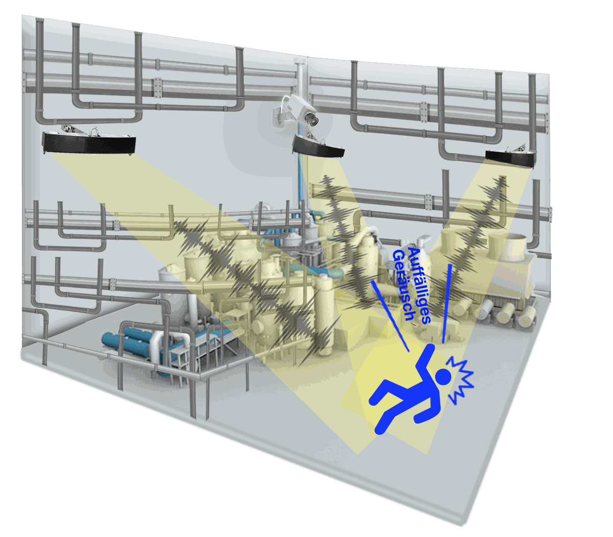

Lösungen für Kommunen und Industrie
Die Sensortechnik ist für drei Einsatzfelder angepasst: Lärmmonitoring in Städten, Anomalieerkennung in Industrieanlagen und Inspektion mit einer tragbaren Ultraschallkamera.
Kommunen (B2G)
Lärmmonitoring in Städten
An Orten mit wiederkehrenden Lärmbeschwerden erfasst der Sensor, welche Quelle wann und wo Lärm verursacht. Die zuständige Stelle kann Kontrollorte, Kontrollzeiten und Standorte für bauliche Maßnahmen auf Grundlage dieser Daten festlegen, ohne ständig vor Ort zu sein.

Bürgerinnen und Bürger
Wie oft nachts Lärm vor der eigenen Tür auftritt und wie das im Vergleich mit anderen Gebieten aussieht.
Verwaltung
Kontrollzeiten, Kontrollorte und Standorte für Lärmschutzmaßnahmen werden anhand der Messungen festgelegt.
Umweltpolitik
Aus den Daten entstehen Kennzahlen zur Belastung im Alltag. Mit ihnen lässt sich die Wirkung von Maßnahmen bewerten.
| Zielgeräusche | Motorradlärm, Baustellenlärm, Hupen und Alltagslärm an Orten mit Beschwerden |
|---|---|
| Montageorte | Bestehende Infrastruktur: CCTV-Masten oder Masten der Verkehrsdetektion |
| Ausgabe | Echtzeitübersicht in der Leitstelle, Auswertung nach Messstelle und Tageszeit, Bericht zu Beschwerden |
Im Pilotprojekt Siheung sank die Zahl der Beschwerden im Installationsgebiet um etwa 60 %. Der Zeitraum war Dezember 2025 bis Juni 2026, und es gab nur Beobachtung und Hinweise, keine Kontrollen. Details zu Messbedingungen

Industrie (B2B)
Anomalieerkennung in der Industrie
Kameras erfassen nur den Bereich, auf den das Objektiv gerichtet ist. Der Sensor hört einen größeren Bereich ab. Bei Unfallgeräuschen oder Anomalien an Anlagen ermittelt er die Position und richtet die nächste Kamera darauf aus.
In Korea gilt das Gesetz über die Bestrafung schwerer Arbeitsunfälle inzwischen auch für Betriebe mit weniger als 50 Beschäftigten. Damit wird wichtiger, Vorfälle früh zu erkennen und die Reaktion zu dokumentieren.
Ablauf bei einem Anomaliegeräusch
Anomaliegeräusch
An einer Stelle des Betriebsgeländes entsteht ein Unfallgeräusch oder ein Anlagengeräusch, das vom Normalbetrieb abweicht.
Erkennung und Ortung
Der Sensor ordnet das Geräusch einer Klasse zu und berechnet den Ort des Ereignisses.
CCTV-Anbindung
Die nächstgelegene Kamera wird auf diesen Ort ausgerichtet.
Meldung an die Leitstelle
Die Leitstelle erhält eine Meldung mit Bild und Ereignis. Der Vorgang wird dokumentiert.
Anlageninspektion (B2B)
Tragbare Ultraschallkamera
Hat ein Sensor einen Hinweis gegeben, geht die Prüfperson mit der Kamera zur Anlage. Das Display legt die Stellen, an denen Ultraschall entsteht, farbig über das Kamerabild. So lässt sich die Fehlerstelle direkt finden.
| Display | 7 Zoll |
|---|---|
| Akku | Mehr als 2 Stunden Betrieb |
| Sensorik | Mikrofonarray, Kamera, Temperatursensor |
| Funktionen | Aufnahme von Akustikbildern als Video, Audioausgabe |

Anomalie mit der tragbaren Kamera erkennen
Schallsignale verarbeiten
Kamerabild und Akustikbild überlagern
Fehlerstelle auf dem Display ablesen
Welche Lösung passt zu Ihrem Standort?
Nennen Sie den Einsatzort und das Problem. Wir prüfen Ihre Angaben und schlagen eine Konfiguration vor.